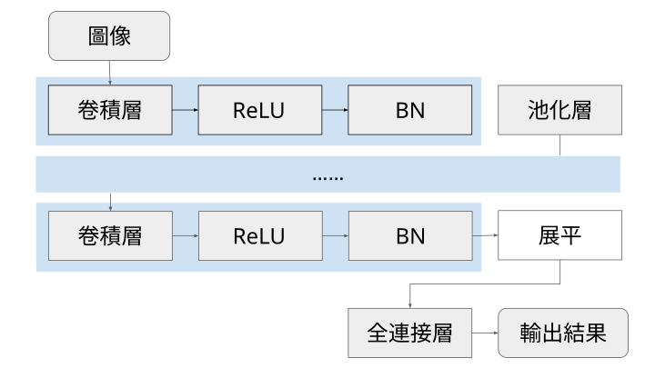

學習模型
Model for Maching Learning
深度學習 / CNN
🖼️ 卷積神經網絡 (CNN) 架構說明
卷積神經網絡 (CNN) 是一種專門用於處理具有網格結構數據（例如：圖像、視頻、語音）的深度學習模型。它模仿了生物的視覺皮層結構，能夠高效地從原始像素中自動學習和提取空間層次特徵。
一個典型的 CNN 架構主要由兩個部分組成：
1. 特徵提取部分 (Feature Extraction)
這部分主要由多個卷積層 (Convolutional Layer)、激活函式層 (例如 ReLU) 和池化層 (Pooling Layer) 交替堆疊而成。
- 卷積層：是 CNN 的核心。它使用一個小的濾波器 (Filter/Kernel) 在輸入數據（如圖像）上滑動，計算局部區域的內積，從而提取邊緣、紋理、形狀等局部特徵。
- 池化層：緊隨卷積層之後，用於降低特徵圖的維度，同時保留最重要的信息，達到減少計算量和防止過度擬合的目的。
- 深層次特徵：隨著層次加深，前一層提取的簡單特徵會被組合成更複雜、更抽象的特徵（例如，從邊緣到鼻子、眼睛，再到整張臉）。
2. 分類部分 (Classification)
在特徵提取完成後，輸出的高維特徵圖會被展平 (Flatten) 成一個向量，然後輸入到傳統的全連接層 (Fully Connected Layer) 進行分類或迴歸任務。
- 全連接層：將提取到的特徵映射到最終的輸出空間（例如，將圖像分類為「貓」、「狗」或「鳥」）。
- 輸出層：通常使用 $\text{Softmax}$ 函式輸出各類別的概率分佈。
🗃️ CNN 架構核心層的功能比較表
| 層次名稱 | 主要功能 | 目的 | 位置/特性 |
|---|---|---|---|
| 卷積層 (Convolutional Layer) | 特徵提取。使用濾波器 (Kernel) 掃描輸入數據，計算局部內積，生成特徵圖 (Feature Map)。 |
|
通常是 CNN 的第一層及主要的特徵提取層。輸出是多個特徵圖。 |
| 池化層 (Pooling Layer) | 降採樣 (Downsampling)。透過最大值 (Max Pooling) 或平均值 (Average Pooling) 減少特徵圖的空間維度。 |
|
通常緊接在卷積層和激活函式層之後。無可訓練參數。 |
| $\text{ReLU}$ 激活函式層 ($\text{Rectified Linear Unit}$) | 引入非線性。將輸入值 $x$ 轉換為 $\max(0, x)$。 | 解決線性模型的表達能力不足問題，使網絡能夠學習更複雜的映射關係。 | 緊接在卷積操作之後，對特徵圖的每個元素獨立應用。 |
| 批次標準化層 (Batch Normalization, $\text{BN}$) | 標準化每一批次 (Batch) 數據的輸入分佈，使其均值接近 0，標準差接近 1。 |
|
通常放在卷積層之後、激活函式之前 (或之後，視實作而定)。 |
| 全連接層 (Fully Connected Layer, $\text{FC}$) | 將特徵圖展平後的向量與所有神經元進行連接和運算。 | 整合所有局部特徵，進行最終的分類或迴歸判斷。 | 位於 CNN 架構的末端，通常在多個卷積-池化塊之後。 |
總結架構流程

生成模型
| 模型名稱 | ||
|---|---|---|
| 基礎特性 | 主要功能 | 應用實例 |
| Transformer | ||
| 基於自注意力機制 (Self-Attention) 的編碼器-解碼器結構，實現序列的並行化處理。 |
|
|
| VAE (變分自編碼器) | ||
| 一種潛在變量 (Latent Variable) 生成模型；由編碼器、潛在空間與解碼器組成，學習數據的概率分佈。 |
|
|
| Stable Diffusion | ||
| 擴散模型 (Diffusion Model) 的變體；透過逐步去噪過程，將隨機雜訊轉化為清晰圖像。 |
|
|
| GAN (生成對抗網路) | ||
| 由生成器 (Generator) 和判別器 (Discriminator) 構成的零和博弈 (Zero-Sum Game) 系統。 |
|
|
| LSTM (長短期記憶網路) | ||
| RNN 的改進版；包含門控機制（輸入、遺忘、輸出門）和記憶單元 (Cell State)。 |
|
|
| RNN (循環神經網路) | ||
| 具有循環連接的網路結構，隱藏狀態在時間步之間傳遞。 |
|
|
Hyper Parameters
| 超參數 | 說明 欲解決的問題 |
|---|---|
| 層數 Layers |
模型中堆疊的層的數量（如卷積層、注意力層）。
欠擬合（Underfitting）、模型學習複雜特徵的能力不足。
|
| 隱藏單元數 Hidden Units/Neurons |
每個隱藏層中的神經元數量或特徵維度。
欠擬合、模型表達能力不足、計算資源利用率。
|
| 卷積網路 | |
| 卷積核大小 Kernel Size |
卷積層中濾波器的大小 (3x3)。
捕捉局部特徵的範圍（大 Kernel 捕捉大範圍，小 Kernel 捕捉細節）。
|
| Transformer | |
| 注意力頭數 Attention Heads |
多頭注意力機制中，並行執行的獨立注意力機制的數量。
捕捉多種不同類型/子空間的相關性、提升模型理解多元資訊的能力。
|
| 嵌入維度 Embedding Dimension |
詞彙或特徵向量在嵌入空間中的維度。
模型表達複雜語義和上下文的能力、資訊瓶頸。
|
| 訓練核心 | |
| 批次大小 Batch Size |
每次權重更新前所使用的樣本數量。
梯度統計穩定性、訓練時間、硬體記憶體限制。
|
| 週期數 Epochs |
完整掃描整個訓練數據集的總次數。
欠擬合（Epoch 數太少）、過度擬合（Overfitting，Epoch 數太多）。
|
| 損失函數 Loss Function |
用於衡量模型預測與真實標籤之間差距的函數。
訓練目標偏差（例如：用 MSE 處理分類問題）、類別不平衡問題。
|
| 正規化 | |
| Dropout 機率 Dropout Rate |
在訓練期間隨機關閉神經元的比例。
過度擬合 (Overfitting)、權重對單一特徵的過度依賴。
|
| 權重衰減係數 Weight Decay L2 Regularization |
對模型權重的大小進行懲罰的係數。
過度擬合、權重值過大導致模型複雜度過高。
|
| 優化器 | |
| 學習率排程 Learning Rate Scheduler |
在訓練過程中動態調整學習率的策略。
訓練初期震盪、訓練後期收斂速度慢、陷入局部最小值。
|
| SGD, Adam, RMSprop 等 | |
| 學習率 Learning Rate |
決定了模型權重每次更新的步長。
學習率過高導致訓練發散（Divergence）、學習率過低導致訓練收斂速度慢。
|
| SGD 變體 : SGD | |
| 動量 Momentum |
用來加速 SGD 在相關方向的移動並抑制震盪的係數。
訓練過程中的震盪、梯度的噪音、陷入淺層局部最小值。
|
| Adam 變體 : Adam, AdamW | |
| beta 1 |
用於計算梯度的一階動量的指數衰減率。
梯度更新的平滑程度、歷史梯度資訊的保留時間。
|
| beta 2 |
用於計算梯度的二階動量的指數衰減率。
梯度更新的平滑程度、歷史梯度資訊的保留時間。
|
| 生成式模型 | |
| Temperature (溫度) |
控制生成內容的隨機性和創造性。它通過調整輸出詞彙機率分佈的形狀來實現。
範圍： 通常是 0.0 到 2.0 (或更高)。
問題： 輸出過於單調、缺乏變化或像背誦。 目的： 增加內容多樣性 (高 T)；確保準確和一致性 (低 T，例如 0.2)。 |
| Top-P (Nucleus Sampling) |
根據累積機率閾值來決定模型在採樣時考慮的詞彙集合大小。
範圍： 0.0 到 1.0。
問題： 某些高機率詞彙被頻繁重複，或低機率的「怪詞」被選中。 目的： 動態地限制採樣空間，在保持多樣性的同時排除極低機率的詞彙 (例如 $P=0.9$ 確保只考慮累積機率達 90% 的詞彙)。 |
| Top-K Sampling |
限制模型在採樣時只考慮機率最高的 $K$ 個詞彙。
範圍： 1 到詞彙表大小 (Vocabulary Size)。
問題： 輸出的隨機性過高，內容可能不連貫。 目的： 固定地限制採樣空間，強制模型選擇較為合理的詞彙。 |
| Max Tokens (最大代幣數) |
設定模型生成最大長度（包含提示詞以外的新生成內容）。
範圍： 1 到模型限制的最大值。
問題： 模型在產生足夠內容前過早停止，或生成內容過長。 目的： 確保回答完整 (調高)；防止輸出失控或超時 (調低)。 |
| Frequency Penalty (頻率懲罰) |
根據一個詞彙在目前已生成內容中出現的頻率來懲罰模型再次選擇該詞彙的傾向。
範圍： 通常是 -2.0 到 2.0。
問題： 模型輸出口頭禪、重複短語或產生迴圈。 目的： 減少重複性，提高文本的多樣性和流暢性 (調高)。 |
| Presence Penalty (存在懲罰) |
根據一個詞彙在目前已生成內容中是否出現過來懲罰模型選擇該詞彙的傾向。
範圍： 通常是 -2.0 到 2.0。
問題： 模型卡在單一主題或詞彙集裡，缺乏新的想法。 目的： 鼓勵模型探索新詞彙和新主題，增加內容豐富度 (調高)。 |
| Stop Sequences (停止序列) |
定義一個或多個文本序列，一旦模型生成了這些序列，生成過程將立即停止。
範例： \nHuman:, ## End。
問題： 模型生成內容超出所需的結構 (例如，聊天機器人開始自行發言)。 目的： 確保內容結構完整或符合對話流程，例如在多輪對話中明確界定模型回答的結束。 |